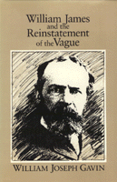

<body bgcolor="#FFFFFF" text="#000000" link="#0000FF" vlink="#CC0000" alink="#CC0000"><center><hr width="350" size="1" align="center" noshade>A study of the concept of vagueness in the work of William James<hr width="350" size="1" align="center" noshade><p><a href="https://cdcshoppingcart.uchicago.edu/Cart/ChicagoBook.aspx?ISBN=9780877229469&&PRESS=temple" target="_top">Buy this book!</a> | <a href="https://cdcshoppingcart.uchicago.edu/Cart/Cart.aspx?PRESS=temple" target="_top">View Cart</a> | <a href="https://cdcshoppingcart.uchicago.edu/Cart/Cart.aspx?PRESS=temple" target="_top">Check Out</a></p><p></p></center><!--none//--><h1>William James and the Reinstatement of the Vague</h1>
<h3>William Joseph Gavin</h3>
<P>cloth 0-87722-946-5 $66.50, Jul 92, <FONT COLOR=#990033>Out of Stock Unavailable</FONT>
<BR> 240 pp
5.5x8.25
145&nbsp;tables
</P><BLOCKQUOTE><I>"This book shed much light on an important but neglected topic in the writings of a major American thinker. It is engagingly written and nicely organized; moreover, it is deeply researched and significantly novel."</I>
<br>&#151<b>Vincent M. Colapietro</b>, Fordham University<I></I></BLOCKQUOTE>
<p>Recently, the work of philosopher-psychologist William James has undergone something of a renaissance. In this book, William Gavin argues that James's plea for the "reinstatement of the vague" to its proper place in our experience should be regarded as a seminal metaphor for this thought in general. The concept of vagueness applies to areas of human experience not captured by facts that can be scientifically determined nor by ideas that can be formulated in words. In areas as seemingly diverse as psychology, religion, language, and metaphysics, James continually highlights the importance of the ambiguous, the contextual, the pluralistic, or the uncertain over the foundational. Indeed, observes the author, only in a vague, unfinished world can the human self, fragile as it is, have the possibility of making a difference or exercising the will to believe.
<p>Taking James's plea seriously, Gavin looks to the work of other philosophers&#151including Peirce, Marx, Dewey, and, to a lesser extent, Rorty and Derrida&#151and shows that a version of James's position is central to their thought. Finally, Gavin provides a pragmatic upshot of James's plea, reaffirming the importance of the vague in two concrete areas: the doctor-patient relationship in medicine and the creating and experiencing of modern art.
<BR>&nbsp;<h2>Reviews</h2>
<p><I>"Gavin has taken an often cited but seldom explored text from James and shown its significance for James's overall philosophy. He clearly and insightfully delineates the character and role of 'the vague' in James's metaphysics and shows its relevance for James's views on science, art, and especially religion."</I>
<br>&#151<b>Eugene Fontinell</b>, Queens College, City University of New York
<BR>&nbsp;<h2>Contents</h2><P>
<p>Acknowledgments
<br>Introduction: Why "the Vague"?
<p><b>Part I: Interpretations</b>
<br>1. "The Vague" in <I>The Principles</I> and "the More" in <I>the Varieties</I>: Some Preliminaries
<br>2. Vagueness, God, and Actual Possibility
<br>3. Vagueness in Science, Percepts, and Language
<br>4. James's Metaphysics: Language as the "House of 'Pure Experience' "
<p><b>Part II: Conversations</b>
<br>5. James, Peirce, and "The Will to Believe"
<br>6. Text, <I>Con</I>text, and the Existential Limit: "The Will to Believe" in Dewey and Marx
<p><b>Part III: Applications</b>
<br>7. James and Modern Art: Process over Permanence
<br>8. Vagueness and Empathy in Medicine: A Jamesian View
<p>(Non)-Conclusion: Life as a "Real Fight"; Text as "Spur"
<br>Notes
<br>Index
</P><BR>&nbsp;<H2>About the Author(s)</H2>
<P><b>William Joseph Gavin</b> is Professor of Philosophy at the University of Southern Maine.</P>
<BR><H2>Subject Categories</H2>
<p><A HREF="/tempress/philosophy.html" TARGET="_top">Philosophy and Ethics</a>
</p>
<p align="center"><a href="https://cdcshoppingcart.uchicago.edu/Cart/ChicagoBook.aspx?ISBN=9780877229469&&PRESS=temple" target="_top">Buy this book!</a> | <a href="https://cdcshoppingcart.uchicago.edu/Cart/Cart.aspx?PRESS=temple" target="_top">View Cart</a> | <a href="https://cdcshoppingcart.uchicago.edu/Cart/Cart.aspx?PRESS=temple" target="_top">Check Out</a></p><p><font face="Arial" size="1"><a href="copyright.html" onMouseOver="window.status='Web Copyright Policy';return true;" onMouseOut="window.status=''" title="Web Copyright Policy">&copy;</a> 2015 <a href="http://www.temple.edu" target="new" onMouseOver="window.status='Link to Temple University home page';return true;" onMouseOut="window.status=''" title="Link to Temple University home page">Temple University</a>. All Rights Reserved. http://www.temple.edu/tempress/titles/866_reg.html</font></p>